수영장마다 홈페이지를 열어 시간표를 확인하던 일을 한 화면으로 줄였습니다. 공식 자료와 이용자 후기를 섞지 않고 출처별로 갈라서 보여줍니다.
누구를 위한 서비스인가, 뭐가 불편해서 만들었나
저는 수영을 다닙니다. 등록한 곳 말고 다른 수영장에서 자유수영을 하려면 시설마다 홈페이지를 하나씩 열어야 했습니다. 공공 시설은 공지 게시판 어딘가에, 민간 시설은 이미지 한 장에 시간표가 있었습니다. 요금은 또 다른 페이지에 있었고요.
“지금 갈 수 있는 곳”을 알려면 매번 대여섯 개 사이트를 오가야 했습니다. 누가 시켜서가 아니라 제가 겪던 일이라 시작했습니다.
만들기 전에 apuapu.kr(전국 839곳)을 찾았고, 만드는 도중에 helloswim.kr도 확인했습니다. 둘 다 저보다 훨씬 많은 수영장을 다룹니다. “이미 있는 걸 또 만드는가”가 이후 내내 기준이 됐습니다.
| 서비스 | 수영장 수 | 후기 | 정보 출처 표시 |
|---|---|---|---|
| apuapu.kr | 839곳 | 리뷰 사실상 1개 | 없음 |
| helloswim.kr | 전국 | 후기 탭은 있으나 리뷰·평점 표기 0건 | “최근 확인” 날짜만 |
| 자수하자 | 12곳 | 3개 출처 교차, 문장 단위 | 항목마다 공식/참고 구분 |
표 0. 2026-09 기준 직접 확인.
| # | 시점 | 무엇에서 무엇으로 | 유형 | 바꾼 이유 |
|---|---|---|---|---|
| 1 | 8/29 | 개별 매물 → 구역·단지 단위 | 범위 축소 | 부동산 매물은 크롤링이 막혀 있고 약관 위반입니다. 단지 단위 + 실거래가로 대체하면 매물 데이터가 아예 필요 없어집니다 |
| 2 | 8/29 | 100m 격자 → 아파트 단지 | 데이터 단위 | 후보 단위가 단지로 바뀌면서 격자 생성이 불필요해졌습니다 |
| 3 | 8/29 | Streamlit → HTML 한 파일 | 기술 스택 | React·Next는 설치와 오류로 하루가 날아갔습니다. 프레임워크 없이 index.html 한 파일로 |
| 4 | 9/12 | 다이소+수영장 → 수영장만 | 조건 축소 | 배포를 끝내고 나서야 “이걸 누가 왜 쓰지?”가 왔습니다. 제가 진짜 알고 싶던 건 수영장 하나였습니다 |
| 5 | 9/19 | 집 찾기 → 수영장 찾기 | 대상 전환 | 가장 큰 전환입니다. “수영장 가까운 집”이 아니라 “오늘 갈 수 있는 수영장”이 제가 매번 겪던 불편이었습니다 |
| 6 | 9/25 | 후기 별점 → 근거 문장 | 표현 방식 | 데이터를 재보니 별점이 채워지는 칸이 24칸 중 1칸이었습니다(④ 참고) |
그림 1. 30일간의 진행 흐름. ⑦에서 다시 ③으로 돌아간 적이 두 번 있습니다(④ 참고).
만든 주요 기능 세 가지
구(마포/양천), 날짜, 시간을 고르면 결과가 네 단계로 정렬됩니다. 선택 시간에 이용 가능 → 운영 확인 필요 → 회차 없음 → 휴관 중 순입니다. 같은 상태 안에서는 그날 등록된 회차가 많은 순으로 놓았습니다.
왜 이렇게 했나 — 처음엔 “현재 위치에서 가까운 순”으로 만들었습니다. 그런데 대상이 마포·양천 두 구뿐이라 거리 정렬이 의미가 없었고, 위치 권한을 물어보는 부담만 컸습니다. 그래서 위치 기능을 빼고 구 선택으로 바꿨습니다.
시간·요금·규격을 값마다 출처 상태와 함께 보여줍니다. 공식 확인 참고 정보 · 공식 미확인 출처 미기록
왜 이렇게 했나 — 처음엔 시설 단위로 하나의 상태만 뒀습니다. 그랬더니
시간표는 공식인데 요금은 후기에서 가져온 시설에서 요금 옆에 “공식 확인”이 붙었습니다.
항목마다 출처가 다를 수 있어서, 규격을 시설규격.csv라는 별도 표로 떼어냈습니다.
네이버 카페·네이버 블로그·구글 지도 세 곳에서 최근 1년 글을 모아 혼잡·시설·수질로 나누고, 별점 대신 원문 문장과 작성일·출처 링크를 보여줍니다.
한 번에 이렇게 된 게 아닙니다. 네 번 갈아엎었습니다.
그림 3. 후기 기능의 실제 변경 순서. 각 단계는 앞 단계의 한계를 확인하고 넘어간 것입니다.
| 단계 | 무엇을 했나 | 왜 다음으로 넘어갔나 |
|---|---|---|
| ① | 네이버 카페 검색 API만 붙임 | 카페 글은 본문을 안 주고 평균 142자 요약만 옵니다. 게다가 작성 날짜가 아예 없습니다. 언제 쓴 글인지 모르는 후기는 혼잡도 판단에 못 씁니다. |
| ② | 별점을 버리고 미리보기와 원문 링크만 제공 | 별점은 근거 3건이 모여야 나오는데 24칸 중 1칸만 찼습니다. 다만 링크만 주면 결국 사용자가 하나씩 눌러 읽어야 해서, 제가 하려던 일을 사용자에게 떠넘기는 셈이었습니다. |
| ③ | 네이버 블로그 + 구글 지도 추가 | 블로그는 postdate로 작성 날짜를, 구글은 잘리지 않은 본문과 별점을 줍니다.
세 출처의 약점이 서로 달라 겹쳐 쓰면 메워집니다. |
| ④ | 공식 자료에 없는 값은 후기에서 채우되 “후기 출처”로 표시 | 아현스포렉스 요금이 공식 페이지에 없었는데 블로그 2건이 같은 값을 말했습니다. 비워두면 쓸모가 없고 그냥 채우면 거짓이 됩니다. 채우되 밝히는 쪽을 택했습니다. |
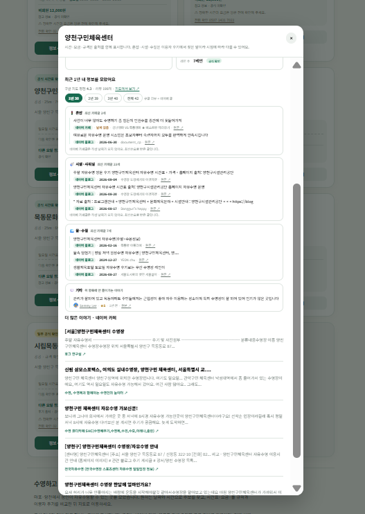
| 정한 것 | 왜 |
|---|---|
| 분류를 3개로 혼잡시설·샤워실물·수질 |
요금·수심은 정답이 하나 있는 값이라 공식 정보로 올려보냈습니다. 후기에는 홈페이지에서 알 수 없는 것만 남겼습니다 |
| “기타”를 만든 것 | 세 분류에 안 들어가는 문장을 버리지 않으려고. 분류가 틀려도 내용이 사라지지 않습니다 |
| 기본값 1년 | 혼잡도는 주마다 바뀝니다. 실측 결과 1년으로도 화면에 쓸 3개보다 충분했습니다(⑤ 사례 B) |
| 기간을 버튼으로 뺀 것 | 코드에 흩어져 있으면 고칠 곳을 못 찾고 사용자도 바꿀 수 없습니다 |
| “날짜 없음” 표시 | 네이버 카페는 작성일을 주지 않습니다. 감추는 것보다 모른다고 밝히는 쪽을 택했습니다 |
| 본문 | 작성 날짜 | 개수 | 성격 | |
|---|---|---|---|---|
| 네이버 카페 | ❌ 142자 | ❌ 없음 | 수십~수백 | 실이용자 문답 |
| 네이버 블로그 | ❌ 요약 | ✅ 있음 | 수십 | 정리글 + 홍보성 |
| 구글 지도 | ✅ 전문 | ✅ 있음 | ❌ 5개 고정 | 시설 전반 |
그림 2. ⑦⑧은 API 키가 노출되지 않도록 서버 함수를 거칩니다. ⑨는 키워드 규칙이며 정확도를 측정했습니다(③ 결과 참고).
평일·토, 토·공휴일 같은 표기를 요일로 풀어야 하는데,
글자 포함 여부로 판정하면 공휴일 안의 일 때문에
토요일 회차가 일요일에도 떴습니다. 같은 종류의 버그를 네 번 만났습니다(⑤ 참고).
“정보를 많이 모으자”가 아니라 “이 출처가 무엇을 잘하고 무엇을 못 하는가”를 먼저 확인하고 역할을 정했습니다. 못 하는 것은 다른 출처로 메우거나 포기했습니다.
| 붙인 것 | 맡긴 역할 | 확인한 한계와 대응 |
|---|---|---|
| 네이버 카페글 검색 | 실이용자 문답 | 본문 없음(142자) · 작성 날짜 없음 → sort=date 최신순으로 받고 화면에 “날짜 없음” 표시 |
| 네이버 블로그 검색 | 날짜가 붙은 최신 후기 | 홍보성 글 섞임 → 작성일·블로거명을 그대로 노출해 사용자가 판단하게 함 |
| 구글 Places | 잘리지 않은 본문 + 별점 | 시설당 5개 고정 · 저장 금지 → Place ID만 저장하고 응답에 no-store. 정렬 옵션 없음 |
| TMAP 지도 | 지도 표시 · 좌표 확인 | 보행자 경로는 1일 1,000회 한도라 429 발생 → 경로 계산은 포기 |
| 카카오맵 링크 | 대중교통·도보·자동차 길찾기 | API가 아니라 링크 규격이라 한도가 없음. 리뷰 API는 아예 존재하지 않음 |
| MediaPipe Pose | 웹캠 팔 동작 인식 | 브라우저 안에서만 실행 → 영상이 서버로 나가지 않음 |
| Three.js | 3D 렌더링 | 물결 텍스처가 외부 이미지 파일을 요구 → 캔버스에 코드로 그려 외부 파일 의존 0개 |
api/naver-search.js와 api/google-reviews.js라는
서버 함수를 사이에 뒀고, 응답에 키가 섞이지 않는지 실제 호출로 확인했습니다.
TMAP 키는 빌드 시점에 환경변수로 주입해 저장소에 올라가지 않습니다.
“수영장 검색하세요”로는 사람을 부르기 어렵습니다. “업무시간에도 수영해볼까요?”로 먼저 부르고, 게임이 끝나면 지도로 넘기는 동선을 만들었습니다. 한 번에 만든 게 아니라 단계마다 브라우저에서 확인하고 다음으로 넘어갔습니다.
| 단계 | 만든 것 | 무엇을 확인하고 넘어갔나 |
|---|---|---|
| 1 | 웹캠 + 어깨·손목 점 찍기 | 팔을 움직이면 점이 따라오는지, 좌표 숫자가 실시간으로 바뀌는지. FPS 17 확인 |
| 2 | 스트로크 판정 + 조절 슬라이더 | 팔을 정확히 10번 저으면 10이 나오는지. 기준값을 화면 슬라이더로 빼 직접 맞출 수 있게 했습니다 |
| 3 | 레이스 · 승패 · 기록 | 열심히 저으면 이기고 대충 저으면 지는지. 물리 계산을 따로 돌려 난이도를 맞췄습니다 |
| 4 | 2D 탑뷰 → 3D 1인칭 | “위에서 본 그림”이 아니라 내가 물속에 있는 것처럼 보이는지 |
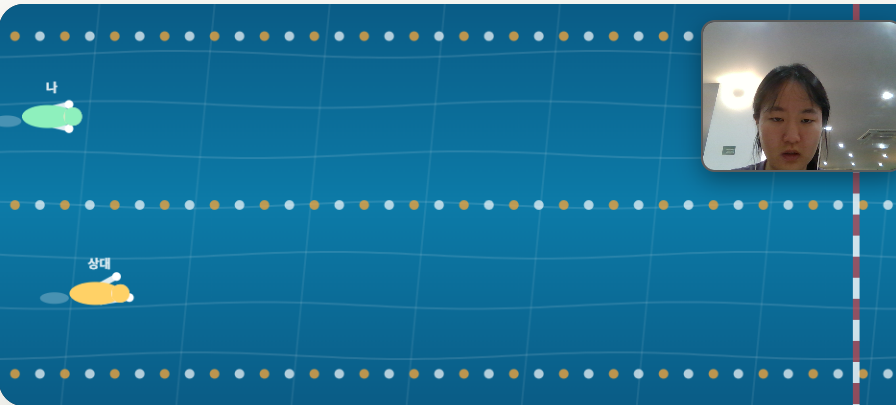
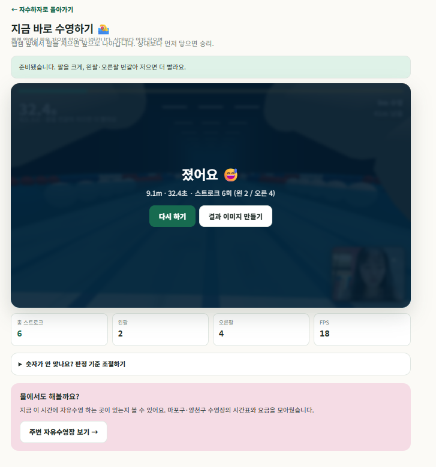
| 처음 결과 | 고친 것 |
|---|---|
| 위쪽이 검은 공백 | 천장·트러스·조명을 넣어 실내 경기장으로 |
| 물 빠진 수영장처럼 보임 | 저각도에서 수면은 거의 눕혀 보입니다. 반사도를 올리고 수면 아래 물빛 층을 깔았습니다 |
| 부표가 돌덩이 같음 | 한 알씩 색을 바꾸니 자갈이 됐습니다. 실제 레인 로프처럼 5알씩 묶고 크기를 줄였습니다 |
직접 해보고 팔을 19번 저었는데 화면에 29번으로 찍혔습니다. 제가 발견해 알렸습니다.
원래 규칙은 “손목이 어깨 위로 올라갔다 내려오면 1회”였습니다. 그런데 올라감 기준이 화면 높이의 6%밖에 안 되고, 손목 좌표는 매 프레임 떨립니다. 팔을 살짝 까딱한 것과 크게 한 바퀴 돌린 것을 구분하지 못했습니다.
그래서 최소 진폭을 넣었습니다. 팔을 올린 동안 최고 높이를 기억했다가, 그 값이 기준을 넘을 때만 셉니다.
짐작으로 고치지 않고 재봤습니다. 판정 함수만 떼어내 흔들림을 넣고 돌렸습니다.
| 손목 흔들림 | 고치기 전 | 고친 후 | 정답 |
|---|---|---|---|
| ±0.10 | 10.5회 | 9.6회 | 10회 |
| ±0.14 | 12.1회 | 9.7회 | 10회 |
다만 깨끗한 팔 동작에서는 중복이 재현되지 않았습니다. 팔이 어깨선 근처에서 머뭇거릴 때만 재현됐습니다. 제게 실제로 일어난 일이 이것인지는 원격으로 확인할 수 없었습니다.
980ms · 1020ms · 140ms … 처럼 나오는데 100~200ms짜리가 섞여 있으면
한 번 저은 걸 두 번 센 것입니다. 원인을 말할 수 있는 상태로 만들어 두는 것이
급하게 고치는 것보다 낫다고 판단했습니다.
처음엔 상대 완주 시간을 45초로 뒀는데, 느리게 저어도 이겼습니다. 카메라 앞에서 팔을 수십 번 저어 확인하는 대신, 브라우저 없이 물리 계산만 따로 돌려 비교했습니다.
| 저는 방식 | 기록 | 상대 32초 기준 |
|---|---|---|
| 빠르게 번갈아 1.2회/초 | 21.3초 | 이김 |
| 보통 번갈아 1.0회/초 | 25.5초 | 이김 |
| 보통 한팔만 1.0회/초 | 32.0초 | 짐 — 치팅 방지 확인 |
| 대충 0.5회/초 | 32.0초 | 짐 |
표 4. 같은 속도라도 한 팔만 흔들면 지도록 맞췄습니다. 이 표를 코드 주석에 남겨 다음에 난이도를 만질 때 근거가 되게 했습니다.
requestAnimationFrame이 멈추는데, 그 상태에서 값을 읽고 “렌더 루프가 죽었다”고
잘못 판단했습니다. 둘째가 진짜 버그였습니다. 손의 경로가
회복 동작에서 카메라 뒤로 넘어가 반 바퀴 동안 팔이 사라졌습니다.
앞뒤 폭을 줄이고 기준을 앞으로 밀어 항상 앞에 있게 했습니다.
공유 카드를 만들었더니 가운데 경기 화면 자리가 통째로 비어 있었습니다.
WebGL은 preserveDrawingBuffer가 기본값 false라
한 번 그린 뒤 그림 버퍼를 비웁니다. 화면에는 이미 표시됐으니 남겨둘 이유가 없기 때문인데,
그래서 나중에 복사하면 빈 화면이 나옵니다. 2D 캔버스에는 없던 문제이고 3D로 바꾸면서 딸려왔습니다.
옵션을 켜고 실제로 복사해 색이 122종류 잡히는 것을 확인했습니다. 고치기 전에는 2종류 이하였습니다.
| 항목 | 기술 정의 |
|---|---|
| 동작 인식 | MediaPipe Tasks Vision PoseLandmarker(lite · GPU · VIDEO 모드).
어깨(11·12)와 손목(15·16) 좌표만 사용 |
| 스트로크 판정 | 높이 = 어깨y − 손목y의 상승·하강. 중복을 막는 장치 3개 —
히스테리시스(올라감 0.06 / 내려감 0.00),
쿨다운 400ms, 최소 진폭 0.15 |
| 속도 모형 | 스트로크마다 추진력을 더하고 매 순간 물 저항으로 감속. 왼팔·오른팔을 번갈아 저으면 ×1.35 |
| 난이도 결정 | 짐작하지 않고 브라우저 없이 물리 계산만 돌려 상대 완주 시간을 45초 → 32초로 조정. 같은 속도라도 한 팔만 흔들면 지도록 맞춤 |
| 화면 | Three.js 1인칭 3D. 타일·물결 무늬를 캔버스에 절차적으로 생성(외부 이미지 0개) |
| 프라이버시 | 웹캠 영상은 브라우저 밖으로 나가지 않음. 카메라 권한 때문에 HTTPS 또는 localhost 필요 |
| 공유 | 결과를 1080×1920 이미지로 생성. 인스타그램은 웹에서 스토리 직접 업로드를 제공하지 않아 공유창 또는 파일 저장으로 처리하고 그렇게 설명함 |
배포 주소와 숫자
🌐 https://mulddae-cyan.vercel.app — GitHub push 시 Vercel 자동 배포
| 출처 상태 | 시간표 회차 | 규격 항목 | 뜻 |
|---|---|---|---|
| 공식 확인 | 30 | 15 | 운영처 공식 페이지·공지에서 직접 확인 |
| 참고 정보 | 12 | 9 | 외부 자료. 공식으로 표시하지 않음 |
| 부분 확인 | 5 | — | 일부만 공식, 나머지는 미확인 |
| 후기 참고 | 3 | 3 | 이용자 후기에서 읽은 값 |
| 출처 미기록 | — | 2 | 기존 데이터에서 옮겼으나 원출처 불명 |
표 1. 전체 50개 회차 중 공식 확인은 30개(60%)입니다. 나머지 40%를 “공식”으로 위장하지 않은 것이 이 표의 요점입니다.
키워드 분류를 만들고 나서 “잘 되는 것 같다”로 넘기지 않았습니다. 후기 37건을 직접 읽고 사람이 매긴 정답표를 만든 뒤 대조했습니다.
| 항목 | 정답 | 찾음 | 적중 | 정밀도 | 재현율 |
|---|---|---|---|---|---|
| 혼잡 여유도 | 5 | 3 | 2 | 67% | 40% |
| 시설 쾌적도 | 7 | 0 | 0 | — | 0% |
| 수영 환경 | 2 | 2 | 2 | 100% | 100% |
| 가성비 | 3 | 2 | 2 | 100% | 67% |
| 합계 | 17 | 7 | 6 | 86% | 35% |
표 2. 정답표 대조 결과(측정일 2026-09-24, 표본 37건).
샤워실이 깨끗 같은 통문장이라
실제 후기의 정말 깨끗해졌어요를 못 잡은 것이었습니다.
매주 화면을 캡처해 작업 일지에 남겨뒀습니다. 다시 보니 고민이 어디서 막혔고 무엇을 고쳤는지가 화면에 그대로 남아 있었습니다.
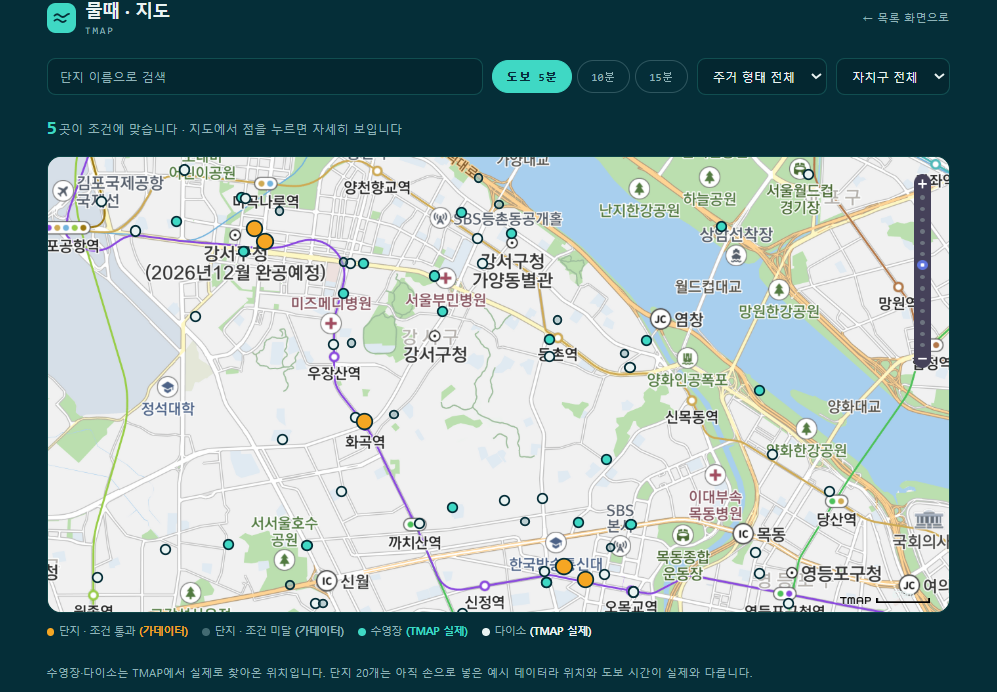
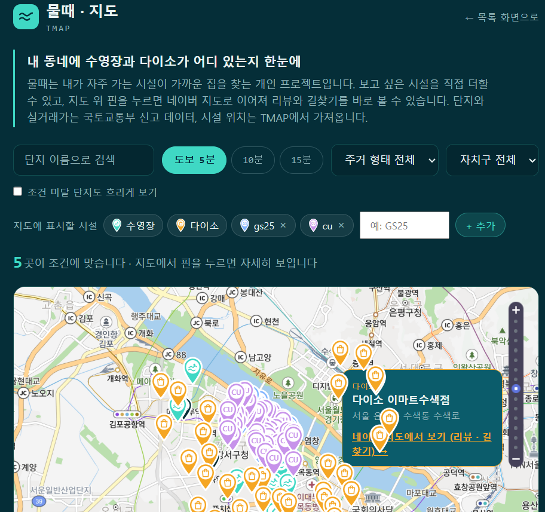
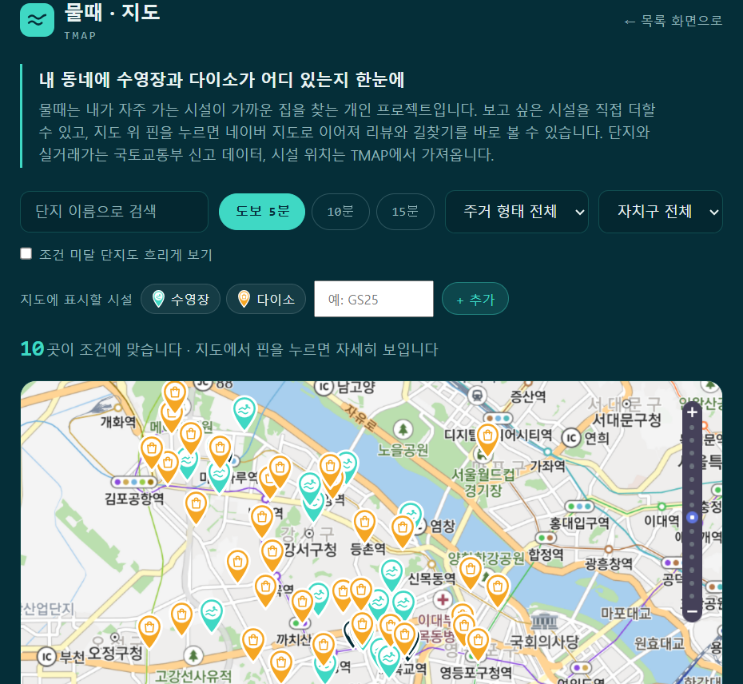
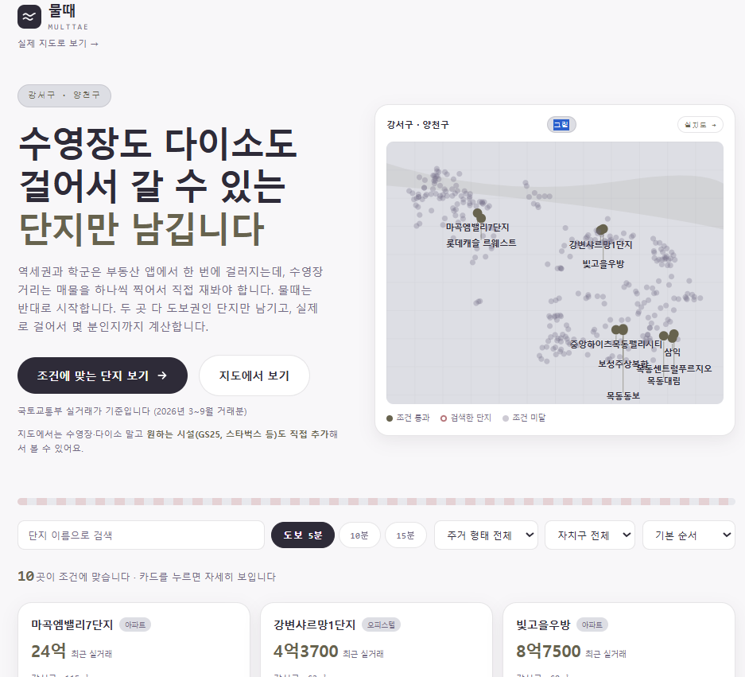
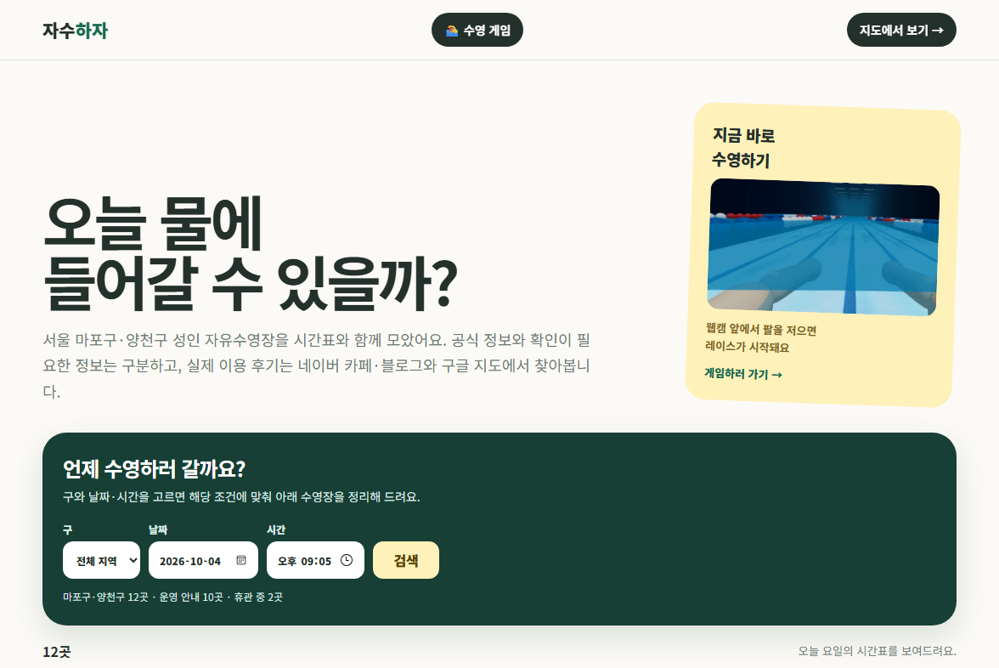
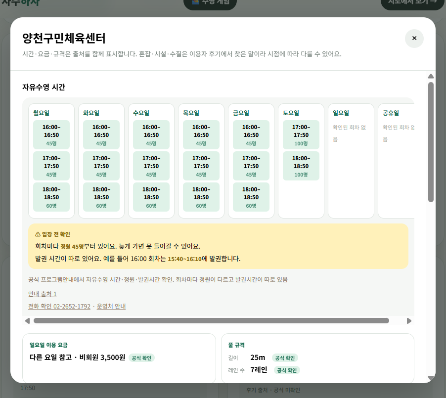
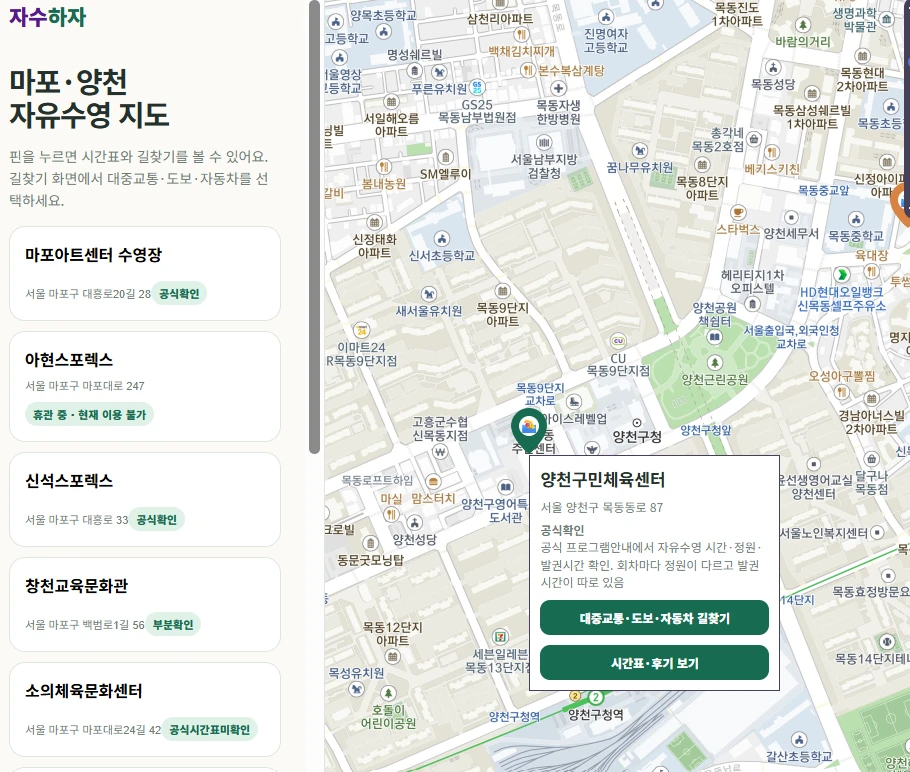
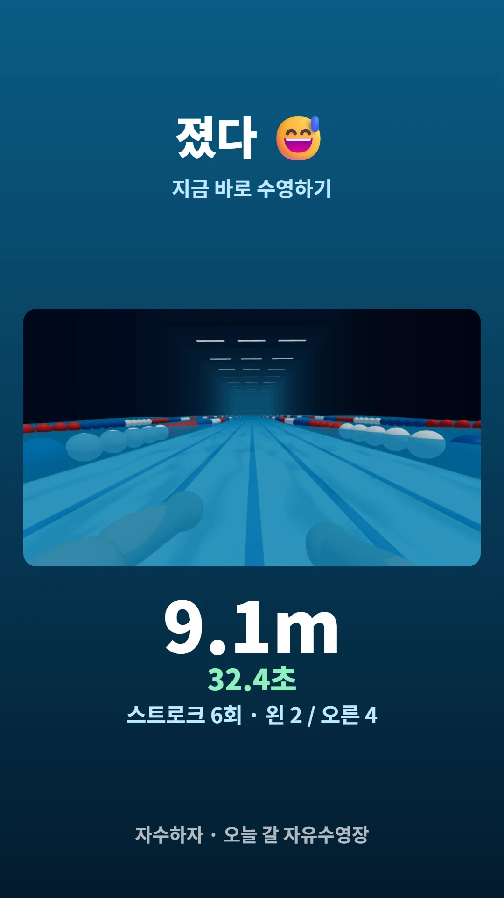
넣으려다 뺀 것들. 왜 뺐는지가 이 프로젝트의 내용입니다
| 뺀 기능 | 왜 뺐나 | 대신 한 것 |
|---|---|---|
| 후기 별점 가장 큰 결정 |
네이버 검색 API가 본문을 안 주고 평균 142자 요약만 줍니다. 근거 3건이 모여야 별점이 나오는데 수영장 6곳 × 4항목 = 24칸 중 1칸만 채워졌습니다. 그 1칸의 근거도 한식뷔페 글의 “가는 길이 복잡하다”였습니다. | 별점 대신 근거 문장. 1건만 있어도 쓸모가 있고, 분류가 틀려도 화면에서 바로 보입니다. |
| 카페 크롤링 | robots.txt에 Disallow: /와 함께
“AI 학습·RAG 목적 접근 금지”가 명시돼 있었습니다. 블로그에는 제 도구 이름이 직접 적혀 있었습니다. |
공식 검색 API. 본문은 못 받지만 약관 안에서 씁니다. |
| 카카오 리뷰 | 출처를 더 늘리려 했으나 공식 리뷰 API가 존재하지 않습니다(카카오 개발자 포럼 공식 답변). 긁는 외부 도구는 약관 위반입니다. | “안 붙였다”가 아니라 “확인했더니 길이 없었다”로 남겼습니다. |
| 도보 시간 계산 | TMAP 보행자 경로 API가 1일 1,000회 한도라 실제로 429를 받았습니다. 직선거리로 미리 거르면 해결될 줄 알았는데 실측 절감은 8%였습니다. | 카카오맵 길찾기로 연결. 대중교통·도보·자동차를 사용자가 고릅니다. |
| 현재 위치 추천 | 만들어 배포까지 했다가 되돌렸습니다. 대상이 두 개 구뿐이라 거리 정렬의 의미가 작고, 위치 권한을 묻는 비용만 컸습니다. | 구 선택 + 날짜·시간 검색. |
| 트랜스포머 분류 | 키워드 대신 AI 모델을 쓰려고 토큰 발급 직전까지 갔다가 멈췄습니다. 분석할 데이터가 확보되지 않은 상태였기 때문입니다. | 데이터 출처부터 해결. 정답표와 측정 도구는 만들어 뒀습니다. |
코드는 대부분 AI가 썼습니다. 그래서 무엇을 맡기고 무엇을 제가 판단했는지가 중요했습니다
AI가 만든 문서에 “네이버 검색 API는 카페 본문을 주지 않습니다”라는 문장이 지나가듯 적혀 있었습니다. 저는 거기서 멈췄습니다.
제가 한 판단과 검증
후기 기간 필터의 기본값이 “3년”이었습니다. 왜 3년인지 물었습니다.
드러난 것
사례 B 이후, AI가 혼자 정하고 있던 기준값들을 표로 꺼내라고 시켰습니다. 꺼내놓자마자 첫 줄부터 근거가 없다는 게 드러났습니다. 지금도 이 표를 유지합니다.
| 기준 | 값 | 누가 정했나 | 근거 |
|---|---|---|---|
| 후기 기간 기본값 | 1년 | 내가 | 1년 내 문장 수 실측 |
| 기간 규칙의 위치 | 화면 버튼 | 내가 | 흩어지면 못 고침 |
| 공식/후기 구분 기준 | 정답이 하나인가 | 내가 | 홈페이지에 없는 것만 후기로 |
| 주제당 보여줄 문장 수 | 3개 | AI | 아직 근거 없음 |
| 별점 뱃지 기준 | 3명 | AI | 아직 근거 없음 |
표 3. “아직 근거 없음”을 일부러 남겨 다음에 잴 대상으로 표시합니다.
코드는 AI가 썼지만 “무엇을 옳다고 볼 것인가”는 제가 정했습니다. 아래는 AI가 제안하지 않았거나, 제안과 다르게 정한 것들입니다.
| 기준 | 제가 정한 것 | 근거 |
|---|---|---|
| 정보의 최신성 | 후기는 최근 1년만. 공식 자료는 확인일을 함께 표시 | 혼잡도는 주마다 바뀝니다. 2~7년 전 리뷰로 “지금 붐비는지”를 말할 수 없습니다 |
| 유효기간 확인 | 신석스포렉스 평일 19시 회차를 제외 | 공지에 “2026-08-31까지 한시 운영”이라고 적혀 있었습니다. 제목에 “자유수영”이 있어도 끝난 일정은 넣지 않습니다 |
| 공식과 후기의 경계 | “정답이 하나 있는가”로 나눔. 시간·요금·규격은 공식, 혼잡·시설·수질은 후기 | AI는 출처별(구글/네이버)로 화면을 나눴는데, 사용자가 궁금한 건 출처가 아니라 정보의 성격입니다 |
| 정원의 용도 | “혼잡도 예측”이 아니라 “헛걸음 경고”로 사용 | 정원이 크다고 그만큼 오지 않습니다. 대신 정원이 정해져 있으면 늦게 가면 못 들어갑니다. 같은 데이터도 무엇이라 부르느냐에 따라 맞기도 틀리기도 합니다 |
| 휴관 시설 처리 | 목록에서 지우지 않고 “휴관 중”으로 남기되 추천에서 제외 | 지우면 사용자는 “그런 수영장이 없다”고 오해합니다. 옛 요금·시간은 카드에 노출하지 않습니다 |
| 크롤링 여부 | 로그인이 필요하거나 robots.txt가 전면 차단한 곳은 수집하지 않음.
공개 페이지를 읽어 교차 확인한 경우는 출처 링크를 그대로 남김 |
기술적으로 가능한 것과 해도 되는 것은 다릅니다. 네이버 카페는 “AI·RAG 목적 접근 금지”가 명시돼 있어 공식 검색 API로 우회했습니다 |
| 다루는 범위 | 전국이 아니라 마포·양천 12곳 | 후기 API는 시설당 호출 수가 듭니다. 좁혀야 깊이가 나옵니다(① 참고) |
후기 37건을 직접 읽고 사람 판정을 붙인 뒤 대조했습니다. 비교할 자가 없으면 “AI가 더 낫다”를 말할 수 없습니다. (③ 표 2)
“될 것 같다”를 받지 않고 실측을 시켰습니다. 게임 난이도도 브라우저 없이 물리 계산만 돌려 상대 완주 45초 → 32초로 맞췄습니다.
직선거리 필터 8%, 존재하지 않는 TMAP 도메인 제한, 잘못 매칭된 구글 Place ID (소의체육문화센터 → 서울소의초등학교) 등 10건.
공휴일의 일, 건물은의 물은,
할줄의 줄, 월~토. 한국어에서 짧은 단어로
포함 검사를 하면 계속 터집니다. 이후 데이터를 넣기 전에 함수에 대입해 봅니다.
지금 아쉬운 것과 개선 계획
robots.txt에서 AI 크롤러를 차단하고 있습니다.
1차 출처(운영처 공식 페이지·전화)로 대체하는 것이 맞고, 아직 끝내지 못했습니다.
특히 단독 인용 1줄은 다른 근거를 찾거나 값을 비워야 합니다.
| 할 일 | 왜 / 어떻게 |
|---|---|
| 정보 변경 자동 점검 | 시간표·요금은 월 1회, 휴관은 분기 1회 공식 페이지를 다시 읽는 작업을 예약합니다. 서부여성발전센터 휴관 공지가 이미지 한 장이라 글자 수집으로는 못 찾았던 적이 있어, 이미지까지 읽는 방식이 필요합니다. |
| 후기 분류 재측정 | 정답표는 네이버 요약문 37건 기준입니다. 지금은 구글 리뷰가 붙었으므로 새 정답표로 다시 재야 재현율 35%가 얼마나 올랐는지 말할 수 있습니다. |
| 키워드 → 모델 비교 | 재현율 35%의 원인은 표현의 다양성입니다. 같은 정답표로 트랜스포머와 비교하면 “재현율이 얼마나 오르고 정밀도를 얼마나 잃는가”를 숫자로 말할 수 있습니다. |
| 게임 스트로크 중복 카운트 | 19번 저었는데 29번으로 세어진 적이 있습니다. 최소 진폭 조건을 넣어 완화했지만 원인을 확정하지 못했습니다. 판정 간격을 화면에 찍게 해 진단할 수 있게 해뒀습니다. |
| 2차 출처 걷어내기 | 다른 정보 서비스를 교차 확인에 쓴 13줄을 운영처 1차 출처로 교체합니다. 대체하지 못하면 값을 비우고 “확인 필요”로 되돌립니다. 원칙을 세워놓고 예외를 남겨두면 원칙이 아니게 됩니다. |
| 지역 확대 | 지금은 마포·양천 두 구입니다. 다만 넓히기 전에 지금 정보의 정확도를 먼저 끌어올리는 게 맞다고 판단해 보류했습니다. |
AI에게 코드를 맡기면 모르는 단어가 그대로 지나갑니다. 그러면 다음에 같은 문제가 와도 무엇을 물어야 할지 모릅니다. 매주 새로 만난 말을 작업 일지에 적었고, 아래는 그중 실제로 판단에 쓰인 것들입니다.
| 용어 | 쉬운 말로 | 이 프로젝트에서 왜 필요했나 |
|---|---|---|
| REST API | 주소로 부르면 정해진 형식으로 답을 주는 창구 | 수영장·후기·지도를 전부 남의 서버에서 받아옵니다 |
| rate limit | 하루에 몇 번까지만 부를 수 있는 한도 | TMAP 보행자 경로 1일 1,000회를 넘겨 429를 받았습니다. 구글도 하루 50회로 묶어뒀습니다 |
| robots.txt | “어떤 자동 프로그램이 어디를 봐도 되는지” 적어둔 파일 | 네이버 카페에 “AI·RAG 목적 접근 금지”가 있어 크롤링을 접었습니다 |
| 환경변수 | 코드 밖에 따로 숨겨두는 비밀값 | API 키를 저장소에 올리지 않고 배포할 때만 주입합니다 |
| 서버 함수(프록시) | 브라우저 대신 서버가 남의 API를 불러주는 중간 다리 | 브라우저에서 직접 부르면 키가 노출됩니다 |
| 하버사인 | 지구가 둥근 걸 감안한 두 좌표 사이 직선거리 계산식 | 도보 API 호출을 줄이려 1차 필터로 썼는데 8%밖에 안 줄어 포기했습니다 |
| 지오코딩 | 주소를 위도·경도로 바꾸는 일 | 빌라·다세대는 지도에 등록이 안 돼 이 단계가 더 필요해서 범위에서 뺐습니다 |
| CDN | 인터넷에 올려둔 파일을 주소 한 줄로 가져다 쓰기 | PapaParse·Three.js·MediaPipe를 설치 없이 씁니다 |
| data URI | 그림 파일 대신 글자로 적어 넣은 이미지 | 지도 마커를 파일 없이 만들어 배포할 때 챙길 파일이 안 늘어납니다 |
| localStorage | 브라우저가 기억해두는 작은 저장소 | 사용자가 추가한 시설이 새로고침해도 남습니다 |
| 정밀도 / 재현율 | 찾아낸 게 맞는 비율 / 있어야 할 걸 찾아낸 비율 | 후기 분류를 정답표와 대조해 86% / 35%로 쟀습니다 |
| 히스테리시스 | 올라가는 문턱과 내려오는 문턱을 다르게 두는 것 | 팔이 문턱 근처에서 떨릴 때 한 번이 여러 번으로 세어지는 걸 막습니다 |
| preserveDrawingBuffer | 3D가 그린 화면을 지우지 말고 남겨두라는 설정 | 안 켜면 결과 이미지를 복사할 때 빈 화면이 나옵니다 |
| requestAnimationFrame | 브라우저가 화면을 새로 그릴 때마다 부르는 함수 | 창이 숨겨지면 멈춥니다. 이걸 몰라서 멀쩡한 코드를 고장 난 줄 알았습니다 |
이 페이지의 수치·프롬프트·버전 캡처는 제 기억에서 꺼낸 것이 아니라, 6주 동안 쌓은 두 개의 문서에서 꺼낸 것입니다. 그리고 그 문서는 AI가 알아서 만든 것이 아니라 제가 먼저 요구해서 생겼습니다.
| 문서 | 적는 것 | 왜 만들었나 |
|---|---|---|
docs/작업기록.md1,265줄 · 31번 갱신 |
무엇을 만들었나 날짜·숫자·검증·남은 한계 |
프로젝트 1주차에 이전 대화가 보관 처리돼 작업 내용을 다시 찾지 못한 일이 있었습니다. 그때 내린 결론은 “다음부터 잘 기억하자”가 아니라 “대화에 기억을 맡기지 말자”였습니다. 단계가 끝날 때마다 갱신하도록 목차까지 정해 요구했습니다 |
docs/포트폴리오-기록.md908줄 |
누가 왜 그렇게 정했나 결정·검증·프롬프트 원문·AI가 틀린 표 |
“내가 단순히 ai한테 의존한게 아니라 활용햇고 어떻게 검증했는지”를 남기라고 요구해 만든 문서입니다. 이 한 줄이 이후 모든 기록의 기준이 됐습니다 — 결과만이 아니라 제가 개입한 지점을 적게 만들었습니다 |